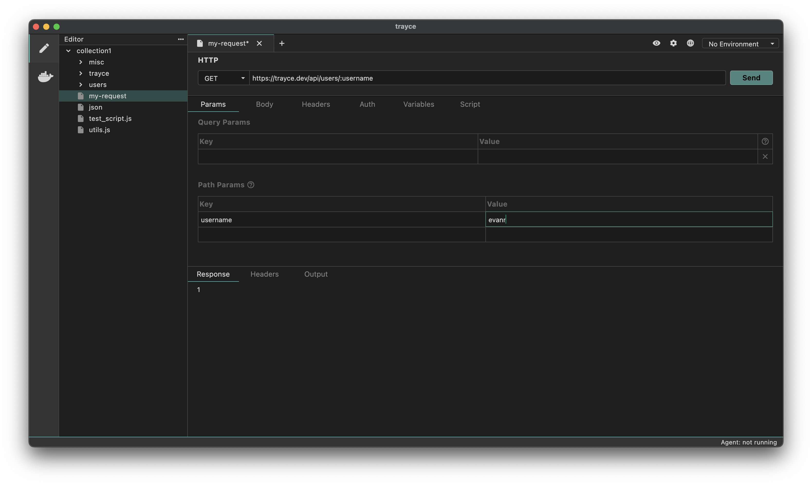

Parameters
Trayce enables you to send data with your HTTP requests. You can include both query and path parameters in the request and define their corresponding values.
- Query Parameters
- Path Parameters
Query Parameters
Query parameters are a way to pass additional information to a server via the URL when making an HTTP request. They are commonly used in GET requests to filter, sort, or specify the data you’re asking for.
How Query Parameters Work
- Query parameters are appended to the end of the URL after a ? symbol
- Each parameter consists of a key-value pair
- If there are multiple query parameters, they are separated by an & symbol
How to Add Query Parameters
- Create a request
- Navigate to the Params tab
- Enter the Name of the parameter and its corresponding Value

You’ll notice that the values are appended to the URL, starting with a ?.
Path Parameters
A path parameter is a dynamic value embedded directly in the URL path of an API request. It is used to specify particular resources or data points within an API endpoint.
How Path Parameters Work
- Path parameters are embedded directly in the URL path.
- They are represented as placeholders preceded by a colon (:).
- When making the request, the placeholder is replaced with a dynamic value, which is part of the URL.
Example:
https://api.example.com/users/:id:id is a path parameter.
How to Add Path Parameters
- Create a request
- Navigate to the Params tab
- Add the path parameter variable in the URL. e.g.
/users/:user - Enter the value in the path parameter section for the corresponding variable.
